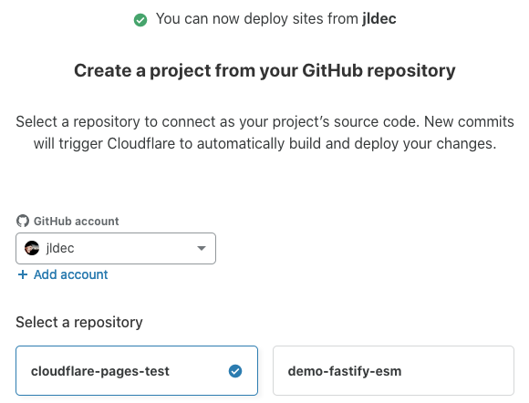
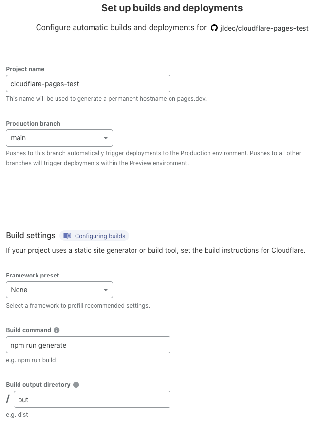

jldec.me
My personal blog, jldec.me, is hosted on Netlify. Whenever I change markdown files on GitHub, Netlify runs a build and publishes the modified HTML.
Cloudflare recently announced the introduction of Cloudflare Pages, and I was lucky enough to be given access to the Beta.
Cloudflare Pages
This is a walkthrough of setting up jldec.eu on Cloudflare Pages.
If you have access to Cloudflare Pages, you will see a button like this when you login to your Cloudflare dashboard.
This takes you to a GitHub form for granting repo access to the 'Cloudflare Pages' GitHub app. (Look for it later in your GitHub Settings to add more repos, or to revoke access.)
Back on Cloudflare, you can choose the repo for the new Cloudflare Pages project.
cloudflare-pages-test is a copy of the markdown source repo from jldec.me.

I provided the branch name, build command, and output directory.
The project name defaults to the repo name.

Submitting the form, triggers the first build and shows the log.
The project page also has a section for configuring custom domains.
I used my own cloudflare-hosted domain jldec.eu.

Subsequent commits to the GitHub repo trigger a fresh build and deploy.
GitHub Pages
For comparison, I set up jldec.uk using GitHub Pages.
First I created a new jldec.uk repo to host the GitHub Pages site. Since the output can include javascript bundles, fonts, etc., I prefer not to store the output in the same repo as the source.
I pushed the first generated HTML website to this repo manually, using the output of a local build. The empty .nojekyll file is important to prevent GitHub Pages from triggering a Jekyll build.
Next I configured GitHub Pages in the repo settings.
(... always nice to use a feature you helped build.)
Finally I set up a GitHub Action to auto-build and auto-deploy the website when the source changes. This is triggered on push, does a checkout of both repos, and commits the new generated output, only when there are actual changes.
on:
push:
branches: [ main ]
workflow_dispatch:
jobs:
generate:
runs-on: ubuntu-latest
env:
JLDEC_UK: TRUE
steps:
- name: checkout source repo
uses: actions/checkout@v2
- name: checkout destination repo under ./out
uses: actions/checkout@v2
with:
repository: jldec/jldec.uk
token: ${{ secrets.GH_TOKEN }}
path: out
- name: generate output
run: |
npm ci
rm -r out/*
npm run generate
cd out
git config user.email "jldec@ciaosoft.com"
git config user.name "cloudflare-pages-test generate action"
git status
git add -A
if ! git diff-index --quiet HEAD ; then git commit -m 'https://github.com/jldec/cloudflare-pages-test/actions/runs/${{ github.run_id }}' && git push ; fi
echo done
This git log from the output repo shows a commit from the action with 4 modified files.

Conclusions
The developer experience of hosting a site with CloudFlare Pages is quite similar to Netlify.
At the moment the Cloudflare Pages Beta does not support redirects and functions, but those are expected with the integration of Cloudflare Workers.
GitHub Pages is more work, and requires knowledge of GitHub Actions if you're not using Jekyll. There are other gotchas if you want to support concurrent builds or preview builds.
The performance of all 3 platforms is excellent since they all serve static files from a CDN
üèÉ‚Äç‚ôÄÔ∏è
powered by pub-server and pub-theme-pubblog